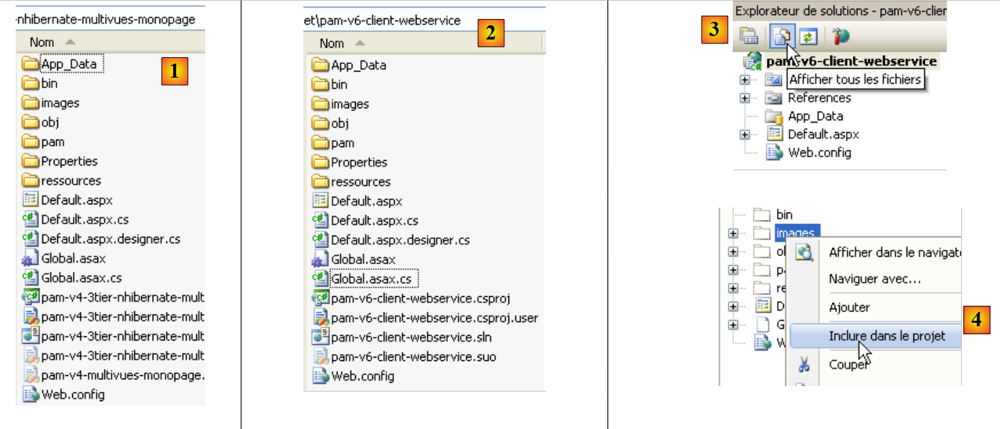
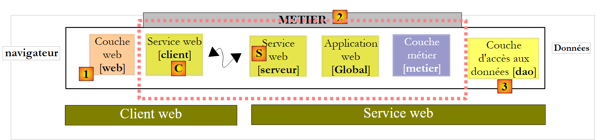
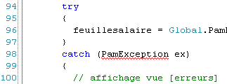

10. La aplicación [SimuPaie] – version 6 – cliente ASP.NET de un servicio web
10.1. La arquitectura de la aplicación
Estamos desarrollando la arquitectura cliente/servidor de la prueba NUnit de la siguiente manera:
 |
En [1], la prueba NUnit se sustituye por la aplicación web de version 8. Hay que recordar aquí que esta arquitectura incluye dos servidores web no representados:
- un servidor web que ejecuta el servicio web [S]. Se ejecutará en una primera instancia de Visual Web Developer.
- un servidor web que ejecuta el cliente web [1]. Se ejecutará en una segunda instancia de Visual Web Developer.
10.2. El proyecto de Visual Web Developer del cliente [web]
Creamos un nuevo proyecto web ASP.NET:
 |
- en [1], elegimos un proyecto web en C#
- en [2], seleccionamos «Aplicación web ASP.NET»
- En [3], le damos un nombre al proyecto web
- en [4], indicamos una ubicación para este proyecto
- en [5], el proyecto creado
Modificamos algunas propiedades del proyecto:
 |
- en [1], el nombre del ensamblado que se generará
- en [2], el espacio de nombres por defecto de las clases e interfaces que se crearán
Para compilar el proyecto [pam-v6-client-webservice], podemos recuperar los archivos [Global.asax] y [Default.aspx] del proyecto web [pam-v4-3tier-nhibernate-multivues-monopage] y copiarlos en el proyecto [pam-v6-client-webservice]. Para ello, primero se utiliza el Explorador de Windows:
 |
- en [1], la carpeta del proyecto [pam-v4-3tier-nhibernate-multivues-monopage]
- en [2], la carpeta del proyecto [pam-v6-client-webservice] tras copiar
- de las carpetas [images, pam, ressources]
- los archivos [Global.asax, Global.asax.cs]
- los archivos [Default.aspx, Default.aspx.cs, Default.aspx.designer.cs]
- en [3], en Visual Studio Express, se muestran todos los archivos del proyecto para que aparezcan los archivos recién añadidos
- en [4], se incluyen en el proyecto las carpetas y los archivos añadidos
 |
- en [5], el nuevo proyecto [pam-v6-client-webservice]
En este punto, se puede generar el proyecto por primera vez [6]. Se obtienen los siguientes errores:
Para comprender estos errores y corregirlos, hay que volver a la arquitectura del proyecto web en construcción:
 |
El proyecto [pam-v6-client-webservice] es la capa [web] [1] del esquema anterior. Se observa que esta capa se comunica con el cliente [C] del servicio web, un cliente que generaremos próximamente.
- Los errores 2, 5 y 7 se deben a que el código de [pam-v4] hacía referencia a DLL de la capa [metier], DLL, que ahora está en el lado del servidor y no en el lado del cliente.
- Los errores 1 y 3 tienen la misma causa, pero en este caso se refieren a DLL de la capa [dao]
- el error 4 se debe a que el código de [Global.asax] utiliza Spring y nuestro proyecto no hace referencia a DLL de Spring. Vamos a añadir esta referencia.
- El error 6 se debe a que la clase [Employe] está definida en la capa [dao], que no existe en el lado del cliente.
Los errores de espacio de nombres 1, 2, 4, 5, 6 y 7 se resolverán mediante la generación del cliente C del servicio web. El error 3 se resuelve añadiendo al proyecto una referencia a DLL de Spring. Podemos proceder de la siguiente manera:
 |
- en [1], se añade una referencia al proyecto [pam-v6-client-webservice]
- en [4], se ha añadido una referencia a DLL [Spring.Core] de la carpeta [lib].
Tras añadir esta referencia en Spring, la generación del proyecto presenta un error menos. Todos los demás errores se deben a líneas de código que hacen referencia a objetos de las capas [metier] y [dao], que ahora se encuentran en el servidor. Veremos que estos objetos que faltan se generarán en el cliente [C] del servicio web.
 |
Antes de generar el cliente [C] del servicio web, vamos a modificar el espacio de nombres de las diferentes clases presentes. Actualmente se encuentran en el espacio de nombres [pam-v4]. Cambiamos este espacio de nombres a [pam-v6]. Los archivos afectados son los siguientes: Default.aspx.cs, Default.aspx.designer.cs, Global.asax.cs. Por ejemplo:
....
namespace pam_v6
{
public class Global : System.Web.HttpApplication
{
// visualización de vista [saisie]
public static Employe[] Employes;
public static IPamMetier PamMetier = null;
....
Línea 2: el espacio de nombres pam_v4 se ha sustituido por el espacio de nombres pam_v6.
Además, hay que modificar el marcado de los archivos: Default.aspx y Global.asax:
 |
El marcado de [Default.aspx] pasa a ser:
<%@ Page Language="C#" AutoEventWireup="true" CodeFile="Default.aspx.cs" Inherits="pam_v6.PagePam" %>
<!DOCTYPE html PUBLIC "-//W3C//DTD XHTML 1.0 Transitional//EN" "http://www.w3.org/TR/xhtml1/DTD/xhtml1-transitional.dtd">
.....
Línea 1: el atributo Inherits indica el nombre de la clase del archivo [Default.aspx.cs]. Se cambia el espacio de nombres.
El marcado de [Global.asax] pasa a ser:
<%@ Application Codebehind="Global.asax.cs" Inherits="pam_v6.Global" Language="C#" %>
En el ejemplo anterior, se cambia el espacio de nombres del atributo Inherits.
Ahora generamos el cliente [C] del servicio web.
 |
Para realizar las operaciones siguientes, es necesario que el servicio web [S] [pam-v5-webservice] se ejecute en otra instancia de Visual Web Developer.
 |
- En [1], se añade al proyecto [pam-v6-client-webservice] una referencia al servicio web [pam-v5-webservice]
- en [2], el URI del servicio web [pam-v5-webservice]. Es el URL del archivo WSDL de este servicio web. En la construcción del servicio web [pam-v5-webservice], se ha indicado cómo conocer este Url.
- En [3], se le pide al asistente que procese el archivo WSDL indicado en [2]
- En [4], el servicio web [Service1Soap] detectado y, en [5], los métodos remotos que expone.
- En [6], se establece el espacio de nombres en el que se generarán las clases e interfaces del cliente [C]
- Se inicia la generación del cliente [C]
 |
- en [1], el cliente generado. Haga doble clic sobre él para acceder a su contenido.
- En [2], en el explorador de objetos, se muestran las clases e interfaces del espacio de nombres pam_v6.WsPam. Este es el espacio de nombres del cliente generado.
- En [3], la clase que implementa el cliente del servicio web.
- En [4], los métodos implementados por el cliente [Service1SoapClient]. Aquí se encuentran los dos métodos del servicio web remoto [5] y [6].
- En [2], se encuentran las imágenes de las entidades de las capas:
- [metier]: FeuilleSalaire, ElementsSalaire
- [dao]: Empleado, Cotisations, Indemnites
A continuación, hay que recordar que estas imágenes de las entidades remotas se encuentran en el lado del cliente y en el espacio de nombres pam_v6.WsPam.
Examinemos los métodos y propiedades que expone una de ellas:
 |
- en [1], se selecciona la clase local [Employe]
- en [2], encontramos las propiedades de la entidad remota [Employe], así como los campos privados utilizados para las necesidades propias de la entidad local.
Examinemos el código de [Global.asax.cs], que presenta errores:
 |
- las líneas 3 y 4 utilizan espacios de nombres que existen en el servidor pero no en el cliente.
- La línea 13 utiliza una clase [Employe] cuyo espacio de nombres no se ha declarado correctamente
- La línea 14 utiliza una interfaz IPamMetier desconocida en el cliente.
Ya nos hemos encontrado con problemas similares en el cliente C# estudiado anteriormente.
En la arquitectura:
 |
- la capa local [metier] está implementada por el cliente [C] de tipo pam_v6.WsPam.Service1SoapClient, que no implementa la interfaz IPamMetier, aunque por otra parte presenta métodos con los mismos nombres.
- Las entidades manipuladas (Employe, Indemnites, Cotisations) por el cliente [C] generado se encuentran en el espacio de nombres pam_v6.WsPam
El código de [Global.asax.cs] evoluciona de la siguiente manera:
using System;
using System.Collections.Generic;
using Pam.Web;
using Spring.Context.Support;
using pam_v6.WsPam;
namespace pam_v6
{
public class Global : System.Web.HttpApplication
{
// la página es válida: se recuperan los datos introducidos
public static Employe[] Employes;
public static Service1SoapClient PamMetier = null;
public static string Msg;
public static bool Erreur = false;
// se calcula el salario del empleado
public void Application_Start(object sender, EventArgs e)
{
// visualización de la vista [erreurs]
try
{
// se guarda el resultado en la sesión
PamMetier = ContextRegistry.GetContext().GetObject("pammetier") as Service1SoapClient;
// visualización de resultados
Employes = PamMetier.GetAllIdentitesEmployes();
// on a réussi
Msg = "Base chargée...";
}
catch (Exception ex)
{
// on note l'erreur
Msg = string.Format("L'erreur suivante s'est produite lors de l'accès à la base de données : {0}", ex);
Erreur = true;
}
}
public void Session_Start(object sender, EventArgs e)
{
// on met une liste de simulations vide dans la session
List<Simulation> simulations = new List<Simulation>();
Session["simulations"] = simulations;
}
}
}
La línea 24 instancia la capa [C] mediante Spring. La configuración necesaria para esta instanciación se realiza en [web.config]:
<configSections>
<sectionGroup name="system.web.extensions" type="System.Web.Configuration.SystemWebExtensionsSectionGroup, System.Web.Extensions, Version=3.5.0.0, Culture=neutral, PublicKeyToken=31BF3856AD364E35">
...
</sectionGroup>
<sectionGroup name="spring">
<section name="context" type="Spring.Context.Support.ContextHandler, Spring.Core" />
<section name="objects" type="Spring.Context.Support.DefaultSectionHandler, Spring.Core" />
</sectionGroup>
</configSections>
<spring>
<context>
<resource uri="config://spring/objects" />
</context>
<objects xmlns="http://www.springframework.net">
<object id="pammetier" type="pam_v6.WsPam.Service1SoapClient,pam-v6-client-webservice"/>
</objects>
</spring>
En la línea 16, la capa [metier] es una instancia de la clase [pam_v6.WsPam.Service1SoapClient] que se encuentra en DLL [pam-v6-client-webservice]. Recordemos que hemos configurado el proyecto [pam-v6-client-webservice] para que genere este DLL.
Todavía quedan algunos errores en [Default.aspx.cs]:
 |  |
- líneas 5 y 6: estos espacios de nombres ya no existen. Las entidades se encuentran ahora en el espacio de nombres pam_v6 o pam_v6.WsPam.
- línea 98: el cliente generado [C] no ha heredado la clase [PamException] de la capa [dao]. No podía hacerlo, ya que el servicio web no expone esta excepción. Se opta por sustituir PamException por su clase padre Exception.
El código queda así:
...
using System.Web.UI.WebControls;
using pam_v6.WsPam;
namespace pam_v6
{
public partial class PagePam : Page
{
...
...
try
{
feuillesalaire = Global.PamMetier.GetSalaire(DropDownListEmployes.SelectedValue, HeuresTravaillées, JoursTravaillés);
}
catch (Exception ex)
{
...
Una vez corregidos estos errores, podemos ejecutar la aplicación web:
 |
- en [1], el URL del cliente web del servicio web remoto
- en [2], se ha rellenado el combo de empleados. Los datos que contiene proceden del servicio web.
Invitamos al lector a probar este version 6, copia del version 4.